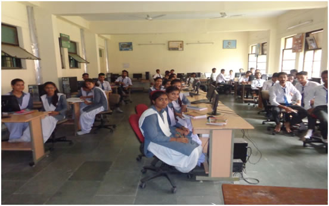
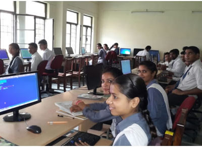

- Computer Science And Engineering
- Information Technology
- Civil Engineering
- Electronic Engineering
- Mechnical Engineering
Computer Science And Engineering
CSE, study of the theory, experimentation, and engineering that form the basis for the design and use of computers—devices that automatically process information. Computer science traces its roots to work done by English mathematician Charles Babbage, who first proposed a programmable mechanical calculator in 1837. Until the advent of electronic digital computers in the 1940s, computer science was not generally distinguished as being separate from mathematics and engineering. Since then it has sprouted numerous branches of research that are unique to the discipline.csl
Early work in the field of computer science during the late 1940s and early 1950s focused on automating the process of making calculations for use in science and engineering. Scientists and engineers developed theoretical models of computation that enabled them to analyze how efficient different approaches were in performing various calculations. Computer science overlapped considerably during this time with the branch of mathematics known as numerical analysis, which examines the accuracy and precision of calculations.
Computer scientists continue to expand the frontiers of computer and information systems by pioneering the designs of more complex, reliable, and powerful computers; enabling networks of computers to efficiently exchange vast amounts of information; and seeking ways to make computers behave intelligently. As computers become an increasingly integral part of modern society, computer scientists strive to solve new problems and invent better methods of solving current problems.
Faculty Details
| 1. | MR. ADESH KUMAR | LECTURER |
| 2. | MR. GAURAV KUMAR UPADHYAY | LECTURER |
Information Technology
At the moment, every body seems to be caught in the tidily wave of Information Technology. Info Tech has change the present scenario dramatically. Till recently information was processed by using Electrical or Mechanical devices such as type writers now these devices have been made obsolete with advent of computers.
The phrase Information Technology deals with creation collection, processing, storage and transfer of information besides various process and devices that are used in the whole procedure.
In fact IT is move or less but quit remarkable in each and every field. IT can perform three basic operation imperative for the compilation of any process.
(1) IT can collect row data and process it into useful information.
(2) IT can recycle processed information and use it as data in another process.
(3) IT can represent information in a new look to make it more attractive and easily understandable.
I.T. LAB INFORMATION TECHNOLOGY, the study of computers, including their design, operation, and use in processing information and practical aspects of engineering, electronics, information theory, mathematics logic and human behavior .Aspects of computer science range from the design of program and computer and hardware to artificial intelligence and robotics . Application, in computer science , a computer program designed to help people perform a certain types of work. The application thus differs from an operating system (which runs a computer) utility (which performs, maintenance or general purpose chares) and a language (with which computer programs are created) .Some application packages offers considerable computing power by focusing on a single task such as word processing; others called integrated software.
| 1. | Smt.Anita Arya | HOD-IT |
| 2. | Mr.Kuldeep Kumar | Lecturer-IT |
| 3. | Km.Meenu | Lecturer-IT |
.jfif)
Civil Engineering
Civil engineering is a professional engineering discipline that deals with the design, construction and maintenance of the physical and naturally built environment, including works such as bridges, roads, canals, dams and buildings.
Civil engineering is the oldest engineering discipline after military engineering, and it was defined to distinguish non-military engineering from military engineering. It is traditionally broken into several sub-disciplines including environmental engineering, geotechnical engineering, structural engineering, transportation engineering, municipal or urban engineering, water resources engineering, materials engineering, coastal engineering, surveying, and construction engineering.
LABS OF CIVIL (1) Basic Surveying Lab
(2) Building Material and Construction Lab
(3) Concrete Technology Lab
(4) Soil and Foundation Engineering Lab
(5) Water Supply and Waste Water Engineering Lab
(6) Highway Engineering Lab
.jfif)
Electronic Engineering
Electronics Engineering, The word ‘ELECTRONICS’ means to deal with Electrons, it basically works on low voltage high frequency. We all knows Electronics world is making very rapidly,
Electronics games & gadegts becomes everybody’s passion today. At present if electronics doing it’s job in medical field., I.T and R & D sections, on the other hand it’s also a matter of fear factor for humans. By the means of electronics people also inventing missles, Boms and other deadly weapson.So Electronics as both good & bad factor for human life.
It becomes possible by meu electronics to communication with other countries in few seconds.
LABS OF ELECTRONICS (1) Microprocessor Lab :– This lab deals with the concept of 80805 and 8086 instruction set and programming techniques. This lab makes students familier with 8085 and 8086 kit and hardware aspects.
(2) Microwave Lab:- This lab deals with measurement an microwave bench of X-band(812 ghz) and characteristics of reflex kly stron tube and gunn diode.
(3) Analog electronics Lab :-This lab has been established for giving concept of basic electronics, solid state devices and circuit and linear ics (741,55) applications.
(4) Communication Lab :-Aim of this lab is to give concept of analog and digital communication system.
(5) Project cum electronics workshop and pcb design lab:- This lab has been established for conducting minor and major projects and electronics workshop and pcb design.
(6) Digital Electronics labs :-This lab gives the basic concept of digital electronics. Experiments based verification of gates, flip-flops, shift registers, counters, multiplesures, demultiplexers,coder and decoder are performed. All experiment are conducted on bread boards.
.jfif)
Mechnical Engineering
Engineers in this field design, test, build, and operate machinery of all types; they also work on a variety of manufactured goods and certain kinds of structures.
The field is divided into :
(1) machinery, mechanisms, materials, hydraulics, and pneumatics; and
(2) heat as applied to engines, work and energy, heating, ventilating, and air conditioning.
The mechanical engineer, therefore, must be trained in mechanics, hydraulics, and thermodynamics and must be fully grounded in such subjects as metallurgy and machine design. Some mechanical engineers specialize in particular types of machines such as pumps or steam turbines. A mechanical engineer designs not only the machines that make products but the products themselves, and must design for both economy and efficiency. A typical example of the complexity of modern mechanical engineering is the design of an automobile, which entails not only the design of the engine that drives the car but also all its attendant accessories such as the steering and braking systems, the lighting system, the gearing by which the engine’s power is delivered to the wheels, the controls, and the body, including such details as the door latches and the type of seat upholstery.
MECHANICAL LAB
Thermal lab:- Thermal lab is based on heat transformation.Here mainly the energy of boiled water is used to perform different tasks.Here we learn about various uses of thermal energy which are specificlly used in industries so that a good use of energy can be done.Various machines and equipments are avilable for studets to understand practically that how thermal energy can be used for its best efficiency in thermal lab.Some of the equipments of thermal lab are as:
Equipment:-Babcock and Wilcox box,Refrigeration and aircondition unit,centrifugal pump prosection unit,Enginecomponent
These Equipment are used for tillage and showing equipments to save time and for higher production.
Metrology lab:- Metrology lab is one of the most important lab for mechanical engineering.Here mechanical parts are measured and prepared for different objectives.Here are various machines to make new mechanical parts and to test their efficiency.Some of the metrology lab machines are as follows:
Torsion testing machine:- With the help of this machine we can test the tension of the metal from which the mechanical part is made.
Hardness testing machine:-This machine is used to test the hardness of metal from which we are making parts of mechanical.
Profile projector:-This machine is used to check the projection of the mechanical part which determines the quality and efficeincy of the mechanical part.
Universal testing machine:-Universal machine is used to test the various qualities of material,which may be toughness,stuffness,torsion,tension and hardness.